来源：https://lqhefhcsx54.feishu.cn/docx/JguIdOfeJoXZI6xrI0bca1Hynfg
大家好，我是薄荷Heidi，一个90后，一个普通人。
加入生财的原因是，23年偶尔机会听到播客《搞钱女孩》开始，11月加入生财。一开始的“美好愿景”是赚15万的，虽然半年后我依然未达成目标，但是我发现我进入生财后，简直把我的认知全部打碎重组。
毕业后打工7年，做精益改善，黑电行业的IE工程师，做现场管理，每天就是做5s管理，查查现场，没有涉及公司真正精益改善的东西，只是发现问题，至于怎么改，只是口头去想去表达，真正改善的是工装工程师、工艺工程师，并且做过的项目没有积累经验，没有可以换取钱。
每天应付集团、总部、兄弟公司、领导、第三方的质量、安全、现场的日度、周度、月度、季度、年度的各种找茬检查，整改，写报告，监督车间问题闭环。每次有人要来检查，每个人的精神都立马竖起来，各种加班搞卫生，装给检查的人看，检查的人一走，立马恢复原样。一直恶性循环。
我的价值不知道在哪？但是我好像很努力在帮公司。正中纪钟老师那句，没有积累的工作是最差的商业模式。
最终家庭出问题，亲密关系出问题，亲子关系出问题，职场出问题，我崩溃了，躯体反应严重，一度想sharen，逃离这个世界，但是脑子里有个声音在很努力很微弱的叫我，该醒了，走吧，最后抑郁辞职。
对于辞职家人也没理解没同意，但是脑子里的有个声音告诉我，“我是对的，做我喜欢的事吧，没错的。”之后的每一天，我都在书店，呼吸着书海里的气息，在无边无际的书海里遨游，除了小说，各种各样的书，不断啃食。
我在经济学的书看到我的育儿出问题，
我在哲学书看到我的工作出问题，
我在心理学书里看到我被煤气灯操控而抑郁，
我在畅销书名人传里看到我懦弱的一面，
我在日本的书里看到我的亲密关系出问题是原生家庭的创伤，
我在佛学书里看到人性的险恶。
我感觉我眼前的路没有很难走，这个世界美好的东西太多了，很多东西值得我去探索。
最后，我除了周一闭馆带着书去咖啡店，其余时间都泡在图书馆，中间通过小红书和思维导图记录我的读书笔记。
基本每期的搞钱女孩我都听完，佩服雪姨和小辉，上哪链接到这么优秀的大神。开始听到雪姨让小辉加入生财那段还想笑，结果等我进生财，我发现生财简直是个宝藏，谁不进谁亏。客服领了三天体验进的生财，一进去就被海量的帖子吸引，但是被戳到的是纪钟老师的那句，“不明白什么是真正的努力，都在用战术上的努力掩盖战略上的懒惰和迷茫”。虽扎心，但清醒许多。所以心底默默告诉自己继续提升自己的思考和创造能力来提升自己的稀缺性。
过完三天的体验营，鱼丸找到我，有一个非常适合新人的项目，5天讲解+实操，每天20分钟，手把手带你探索4个赚钱方向，拆解8个具体项目，最终我提交了4个项目拆解给鱼丸。
原来每一个小事，都可以赚钱，只不过我没见过没听过，以为这个世界赚钱很慢很难。
项目拆解营是我的一个初始，也是我后续探索的第一步。
就像全职妈妈泳怡一样，行动力，当你想做，就立马去做，一直观望只会让你止步不前。
陈雪老师提过，推荐生财有个项目叫航海实战，一定要下场实操。于是，立马加入2023年12月的航海，因为当时我对很多项目不清楚，所以只挑了我做过的思维导图作为提升项目。
作为社恐人士，除了每日打卡，还收到志愿者柏芝的鼓励，在这里我要跟她在线表白，催打卡也不反感，真诚的想她的学员进步，她的一个表情包“你练了=我练了”竟然推动我要帮她冲志愿者榜一，还给我推荐提升好事效率的技巧，是她让我一步一步在思维导图找到自己的价值，是价值冲淡了我的焦虑和迷茫。
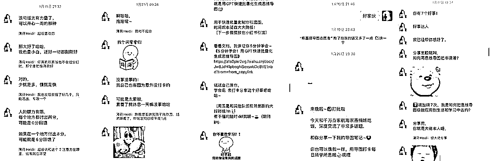
基本每天都收到来自思维导图志愿者和我自己的正反馈。最终上墙好事榜13次，被柏芝鼓励分享自己的好事。
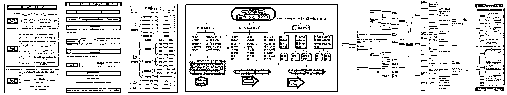
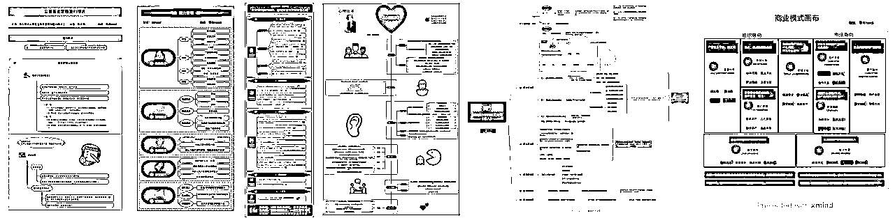
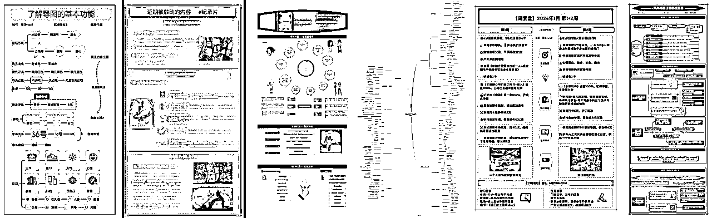
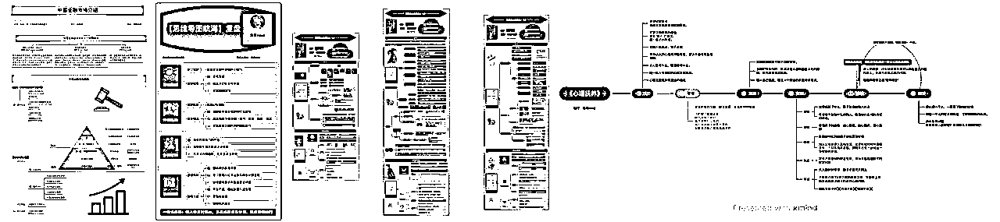
在12月思维导图的航海里，不仅仅是想要拿回保证金，而是掌握基础作图技巧，匹配不同的样式，让导图更好的呈现出来。柏芝说，不要放弃任何一个可以出圈的机会。所以在她的鼓励下，虽然没选上，但是给了我很大的动力。我把能上13次好事墙的心得和各个优秀圈友的好事也都整理出来。虽然很粗糙，也是对标学习的一个机会。
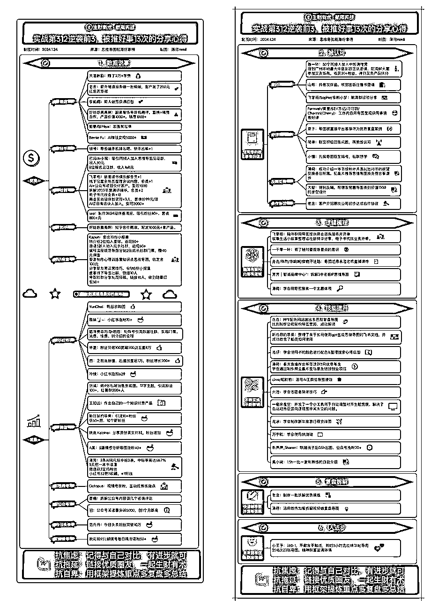
最后柏芝带领我们组冲榜第一，她还私人赠送了一本郭拽拽的新书《前途无量》。
书中也提到王阳明老师的事上练，多问自己打算怎么赚钱，反复叩问，可以避开内耗。
漫画《一人之下》张楚岚爷爷提到：木秀于林而风必催之。都怕朋友开路虎，外面的世界要求多的是，对外太累，根本应付不过来，对内求己就好。修心，知行合一，练就对了。
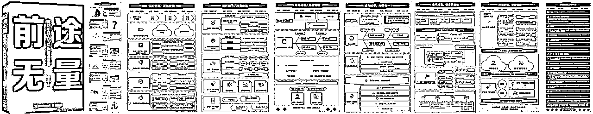
什么是真实的，结果是真实的。什么是牛逼的，长期拿结果的人。向结果致敬，向有结果的人靠拢。
做完这个导图，已经不用畏畏缩缩了，有目标有榜样，学就对了。
学习和阅读是低成本的元技能，学完输出，就像现在的我一样，
虽然我的不算什么作品，但是也对我读书这件事的肯定。
基金里有一句话，按纪律操作，做好配置，等风来。听话照做，一步步积累，风来了，猪都能飞起。
身边的大佬，为何如此保持高速的成长？本质都是保持极度饥渴，求知欲不是我们想的那种网上冲冲浪的表面样子，主动学习，独立思考才是王道。
而思维导图是一个很好的倒逼你输出你思考的一个方式。借用杨涛老师的一句话，“船大好抗风，船小好掉头”，一切都来得及。
参加完航海，我开始对风向标感兴趣，刷了圈友的中标帖子，我开始把我平常无目的刷手机改掉。
改成带着疑问、敏感、好奇，去刷小红书、抖音、视频号。
在我发了1篇风向标的时候，鱼丸开始问我要不要加入赚钱挖局训练营。
第一期的赚钱挖局训练营开放了4个垂类【小红书】【AI工具】【TikTok】和【视频号】，需要7天内结合分享+实操的形式，掌握挖掘风向标的方法，培养更敏锐的商业嗅觉。我第一个报名内测活动。
这个活动的好处是可以让你专注一个赛道去发现异常值。比盲头苍蝇去公域找赚钱点子要好。因为当时正值AI发展迅速，我就选择了【AI工具】赛道，发布了AI主题风向标3条，中标2条，中标率66.7%，亦仁大大简直是给了我超级无敌大的信心。
中标的风向标
https://wx.zsxq.com/dweb2/index/topic_detail/811442121441112
https://wx.zsxq.com/dweb2/index/topic_detail/588444582122424
后来想着飞书要分开看4天的分享，我又使用竖版思维导图整理了鱼丸的4天风向标挖掘营的分享。
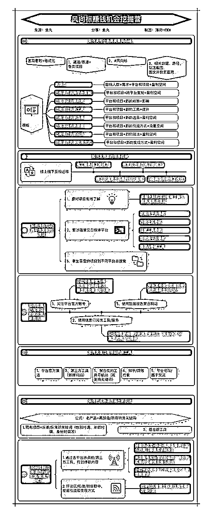
1、风向标发布原来有技巧，如何发布，如何发掘，真是个好活。
2、AI 赛道其实信息量很多，我的两条中标的风向标是来自于B站，里面的大神真的太多了。
3、做完这次风向标的竖版思维导图，每次我找不到比较好的风向标时，我都会拿出来重新再看一眼，是途径没对？还是没挖出变现的方式？还是我的偏见在作怪？还是星球的中标贴没去刷？多问自己几个问题，或许会有答案。有时灵感就在那么一瞬间，苏州过后无艇搭。
得益于风向标挖掘营的参加，我的风向标又进阶了另一个阶段。
因为发过风向标，也中过标，鱼丸又建议我加入风向标共创群，听说群里还有亦仁不定期点评风向标，以及一些前沿的机会分享，大家也可以相互认识交流，但是前提是每月星球至少发布4条风向标。
开始天真的我想着可以跟亦仁同一个群，我是多么荣幸啊，根本不想4条风向标对我的难易程度，果断报名。
但是我进群后，亦仁没说过一句话，人微言轻也没好意思链接他。但是风向标只要求发，没要求中啊，这不是最小目标最容易目标吗？就跟每天让你看1页书一样，不难。
于是我开始疯狂找收集风向标，截止今天，发布风向标41条，中标5条，中标率12%。
中标合集：
小红书--
https://wx.zsxq.com/dweb2/index/topic_detail/4844514255158218
https://wx.zsxq.com/dweb2/index/topic_detail/1522444152115852
本地生活--
https://wx.zsxq.com/dweb2/index/topic_detail/211185248882121
AI工具--
https://wx.zsxq.com/dweb2/index/topic_detail/588444582122424
https://wx.zsxq.com/dweb2/index/topic_detail/811442121441112
A、风向标重在短与快，140字以内赚钱信息言简意赅表达核心玩法。
B、我把风向标当成兼职来做，我即可获得收益，也给大家有价值的讯息。
C、找讯息会分散注意力，每天发布十几个对于我来说有难度，但是每个月4个，提高了我对碎片时间的掌控。
D、收集风向标对于我会提高我的观察，也是记录我观察的足迹，赤面M老师说风向标属于我的商业笔记，也是赚钱信息收藏夹，也是我的灵感来源。
E、锻炼我的商业嗅觉，或许网感也需要这么锻炼吧。
F、后续我还需要拓展我信息搜索渠道，这样我的中标率估计更高。
虽然中标并不多，但是中标代表着我的方向我的触觉是对的，我又往前迈进一步。
因为在风向标·赚钱机会挖掘营成功通关，我直接获得风向标·项目拆解交际花的直通名额。
12个机会选题认领拆解，7天内完成拆解&发帖，就可以获得术值，被加精的优质拆解内容，可能获得龙珠碎片等额外奖励。
又是一个锻炼的机会，总不能白送白不要把？
于是我在没有付费买数据分析工具的情况下，拆解了一个视频号家庭教育的知识付费的博主，虽然我没成功被加精，但是也有收获。
项目拆解帖子的好处和感悟：
A、虽然我很少写帖子，但是模仿着圈友的帖子，我笨拙地交出星球的第一篇帖子。
B、我学习着从表面的现象挖出点东西，这是我以前看精华帖看完就算，但是让我写，我就需要构思框架，思考自己要表达什么，如何表达，如何呈现，是一个深度思考后输出的一个结果。
C、项目分12个聚焦话题，可以让大家更加专注该领域，并且项目拆解要求7天内3天回填记录，减少堆在最后一天再来拆解，一点一点的收集信息写出感想，会更加有动力，也可以降低拖延症犯的机率。不得不佩服生财设计活动的点。希望后续更多这样的项目拆解训练营，增加更多正反馈。
过年期间好像懒散了点，没有了目标，只是偶尔找找风向标。直到3月的航海重新起航，我又开始鸡血打满。
在风向标共创群里，我被张波老师鼓励到，配合着成都小天老师的表格，15条船全部上岸，还做了公众号的教练，还进行5次高手航海，还写了1篇帖子，是多么惊人的时间管理啊！他说，除了睡觉都在打卡，平均19h/天在做航海。
张波老师说，不参加几个航海，风向标如何发掘呢？这么一听，又多了一个挖掘渠道。
老师还给出了干得并不能再干得干货，分享给大家：
【除非你是天选之子，或者运气很好一个项目就爆了，就财务自由了。
普通的人三条路径：
1、不要命的航海，所有的航海能参加都参加。
2、不要命的看帖，精华帖普通贴能看就多看。
3、大量的付费，龙珠榜从上往下挨个付费。】
因此我就秉着观摩涉猎的态度，报名了3月航海实战。
第一次高强度参加7个航海，全部打卡完毕后，我才有空去补听高手分享的回放。我将航海分为两种：一种是变现，一种是感受。
变现：TiKTok海外短剧、AI绘画特训、闲鱼高客单带货
感受：早睡航海（交流）、剪辑特训、思维导图特训、有知有行投资第一课
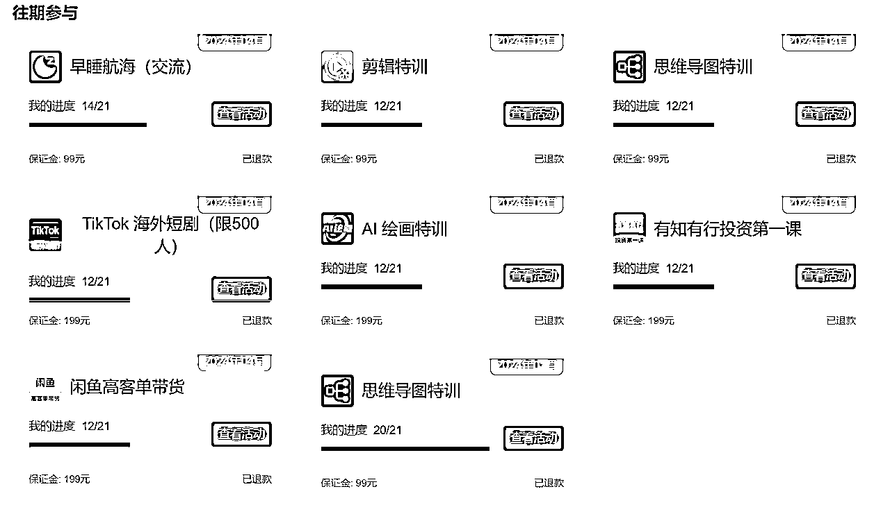
A、变现：
我第一次接触，也是刷新的认知的一个航海，重点是刺激点要给足，怪不得身边的老人都爱看。
但是剪辑我没有剪过，只用过剪映的一键剪辑，所以正好在剪辑特训里用上，赚美金还是很香。
但是我整体下来，是刷剧网感差，导致剪辑时选取的片段不够吸引，去重的效果不好，剪辑时间长，剪辑基础非常不稳，后续只在消化航海手册，并没真正的剪辑，导致短剧和剪辑两个航海的效果都不好。
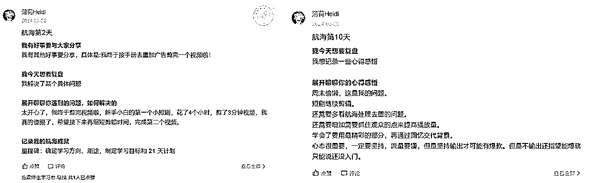
我感兴趣的方向，刷到很多比较好的AI 账号，也在观摩学习，并且建立自己的提示词库，为后续引流做准备。
但是AI绘画涉及到多个软件的使用，自己在摸索后，只到了认识它这一步，并未真正的深度使用它，包括玩法的拓展、绘画的延伸，导致变现遥遥无期。
并且想着我只会皮毛，不足以接单。
我只停留在学，败在没开始用。后续我还需要动起来。
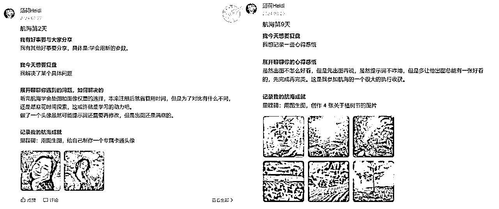
刷新我认知的一个点，关键是找到小众方向的需求，相比低客单价没有更多的情绪消耗，教练有货源有售前售后的话术，关键在选品，问题在于自己在选品的时候变成选自己喜欢的产品，而不是客户的产品，注意力被分散，导致航海结束前我并没有达到教练要求的50个品，已经上的品也没卖出。但是教会我选品的思路以及整个流程的操作。如果我没参加这个航海，我肯定错失了这部分经验。
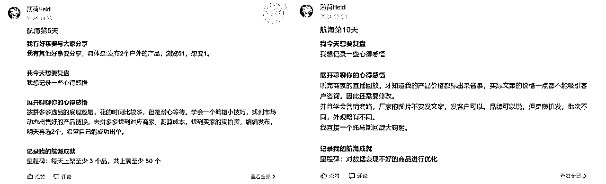
B、感受：
是一个特别的航海，也是刷新我认知的一个航海，原来早睡还可以赚钱，原来是一个对自我觉知的一个训练，原来早睡也有一个叫【此消彼长】的方法，原来早睡是回归到自我决定之上，让自己做决定是很有力量，原来睡觉可以帮助10X增长的基础工作。
当我把早睡当成秩序的原点，我开始有标准，我发现我对自己更加诚实。当我有这个原电脑，我睡觉这件事不犯错，但是让其他的错误发生，我才会去认真反思改进，我定的目标是不是有问题。
当然我也被航海打卡耽误了睡觉，所以我的思想就在“贪多嚼不烂”和“不学你怎么会呢”之间横跳。
后来我没有再对我选择7个航海的事纠结，而是每到晚上，我就开始告诉自己要早睡。第二天诚实的面对自己没做完的航海，祛魅、挤出水分，扎实前行，这给我带来了勇气和力量。
后来发现，原来不仅仅是睡觉的事情，更重要是我在做一个【改变】的事情。
航海结束后，我基本能安顿好孩子后，每天能在10点前关灯，10:30分前睡着，每天早上能在6点左右起床。在孩子醒之前我又多了1个小时属于自己的时间。
做什么都行，反正我多了1个小时很自信很感恩，充满能量。
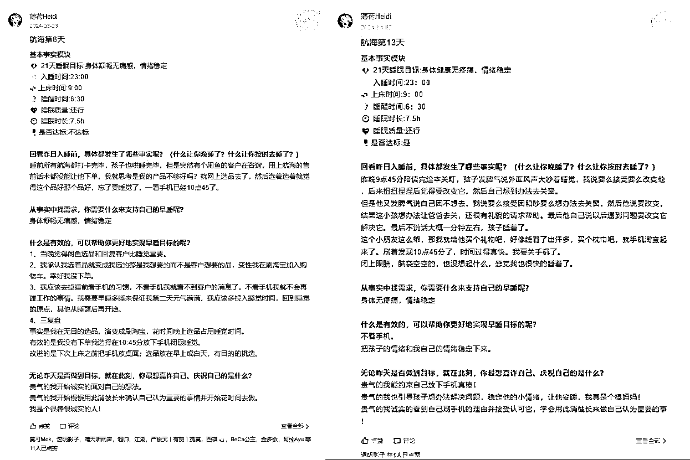
开始我以为是简单的教会投资理论的航海，实则又是冲破我认知的一个点。
因为付费学习过基金投资，所以对投资还是很感兴趣的。对于普通投资者，所有试图绕过投资知识的传递，仅仅从策略角度去解决问题的方式都是徒劳的。
当我们了解投资这件事的真正底层的原理，我们在市场中就会更宁静，更自由。
只要我们愿意从中短期的不确定中抬头，看远方，就可以发现巨大的确定性，长期看来，优质资产一定会随着时间变得越来越值钱。所以还是要建立投资系统，属于自己的投资系统。
这是我原来触及不到的认知。
不论买什么资产，进行哪种投资，都必须摸清楚它的底层规律，理解它的秉性和脾气。我们在投资中一定要弄清楚买入的资产是什么，它的底层运行逻辑是什么，我赚到的钱是从何而来，是否合法、有规律可循。这些问题的答案也有助于我们做到【保证自己一直在牌桌上】，不会因为短期的资产波动就心存疑虑。
后续我也在有知有行上配置了我的四笔钱。时刻关注市场的变化，静待结果。
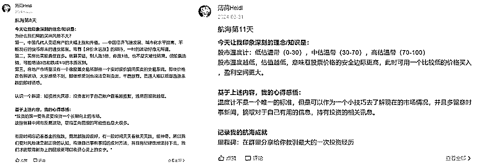
第二次选择是因为罗卜教练在12月航海群的简单提醒
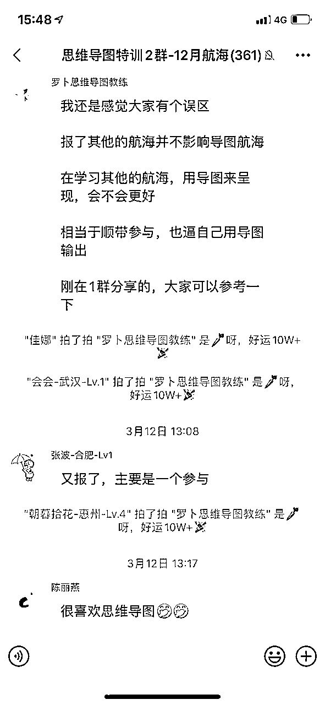
思维导图的核心是思路，工具是实现方式，实则帮助表达自己的思路。
一次线下活动，一场直播，主动点，输出导图，被看见的机会就多一点。
因此这次思维导图我输出的更多是其他航海的高手分享。
我更加肯定思维导图可以带我链接更多优秀的人，可以带我摆脱追我的焦虑影子。
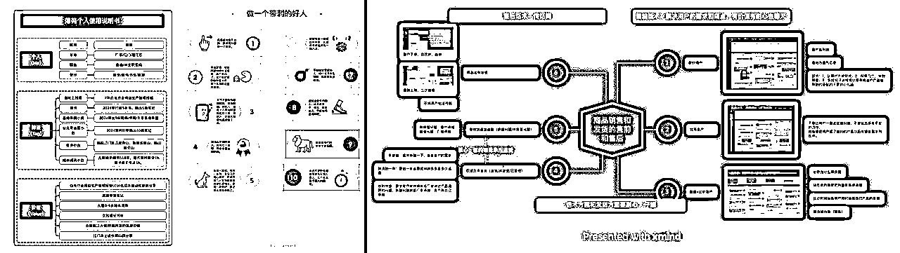
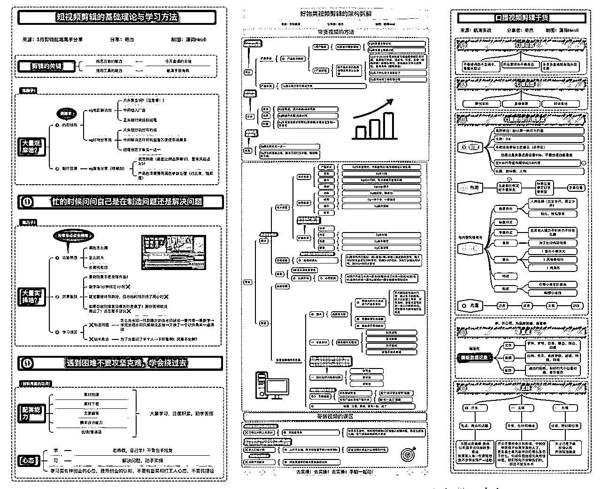
总体来说：
对于我来说，参加3月的这次航海，更像是一只蚂蚁开始用触角去感受这个世界，慢慢走出自己的糟糕世界，去迎接森林里更多的挑战。
接着我又开始进阶下一个层次。
2023年4月末的一个半夜，罗卜老师在群里简单提了一嘴【打算组个线上共创，哪些小伙伴感兴趣，制作优秀的精华帖/项目导图】，老师没说任何条件，任何嘉奖，任何承诺，第二天的晚上，我举手报名了。
或许是我本身也在看精华帖，本身也在做导图，本身也在分享利他吧，我没有期望老师会给我什么术值或者生财周边或者链接哪个大佬，我只想在制作精华帖导图时能找到我想要的任何东西，仅此而已。
就在我报名的第二天，罗卜老师才给出"KPI"：
A、至少做30张优质或者持续3个月分享导图；
B、导图群不承诺带来直接收益，仅做日常交流提升思维能力；
C、早日共创100篇导图贴；
D、5月至少做2张，入群默认遵守规则，没完成移除群，后续再进可能收费。
4月产出1篇思维导图，5月产出11篇思维导图，还有现在这1篇思维导图贯穿半年入局生财的帖子。
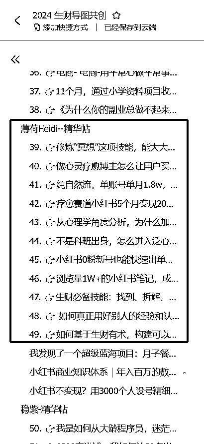
《增长的确定性》-涛哥深圳线下分享5000字精华摘录下分享的链接
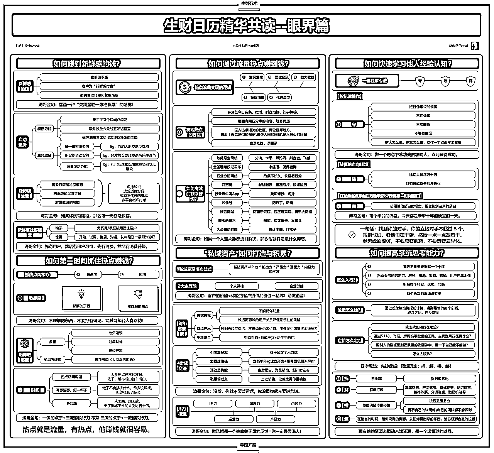
在加入思维导图共创之前，我在视频号直播间看到杨涛老师拉新，听到他关于【创业、内容、流量、职场、成长、副业】的直播，之后找到有圈友整理的生财日历精华共度。
内容是每天每主题的汇总，是对话的形式。非常适合做导图，所以我我才有预备好的第一份导图作业。
a、内容非常多，还没做完，但是我选择先做先交。在作图的时候，有些东西我可能还没很好的吃透，但是反复接触反复提醒的时候，或许才知道他的重要性。
就如：如何快速学习他人经验认知---当时我只是点头，记录，仅此而已，并没有思考。但是后来再看到一篇关于刘小排精华帖的时候才知道，原来【守破离】是这么深沉的道理。详见下面第K个图。
b、道理相通，不同的大佬讲出来的思考不一样，举例不一样，到我这里吸收程度又不一样。
c、所以思维导图是一个精华库，既帮助理解记忆，又帮助反复思考，提炼属于自己的思考知识体系。这时离我想要搭建的个人商业知识体系又进了一步，详见下面第L个图。
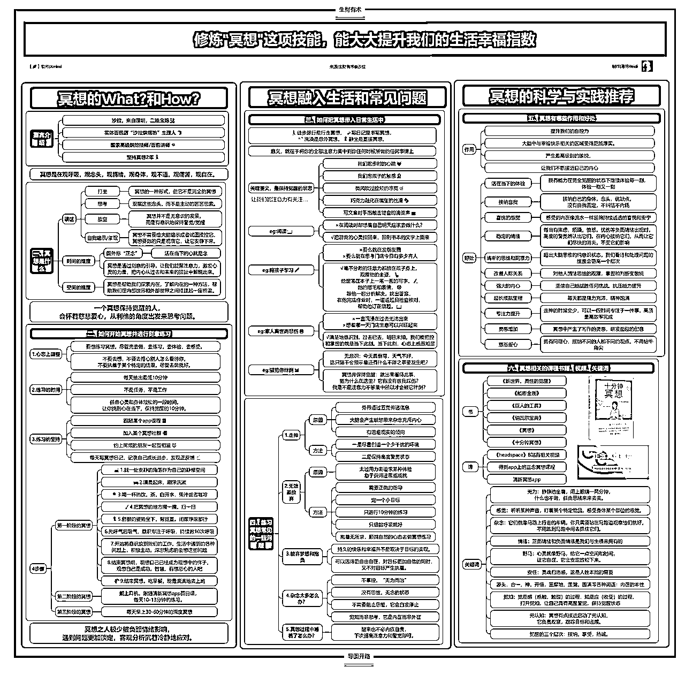
因为当了妈妈后抑郁过，颓废过，迷茫过，对二胎宝妈沙拉这个身份的创业精华帖尤其感兴趣，所以5月份初开始了泛心灵板块的精华帖寻找和拆解。
a、解除了对冥想的一些误解，原本以为冥想是打坐发呆放空自己，实则是有意识的保持警觉，观察它，让它安静下来，帮助我探索内在，是一座连接内外的桥梁。
b、试着早起冥想，试过睡着了，但是我没有责怪自己，而是下次提高注意力和警觉。
c、试着像沙拉老师一样把冥想带入日常生活中，做完导图的第二天我就去山里徒步，感受我徒步的心跳，专注在我的脚上，但是由于走着走着就被领队的步伐带走，没有对自己的状态保持觉醒，我停下来的时候，两眼发黑，手脚无力，嘴巴说了一句：完了，我眼睛看到黑的，身体就往前倒下去，幸好领队看到我脸色发白，赶紧拉住我，坐下来，休息，吃了个糖，才缓过来。
所以徒步还是要按自己的节奏来，对自己的状态保持觉醒才行。这是我第一次把冥想用在徒步上的经历。还有不要自己独行徒步，发生危险真的很可怕。
e、陪孩子看记录片，以前都是孩子看视频，我看手机，现在我选择把手机放下，把注意力放在孩子身上，观察他看着视频的眉毛和表情，观察他的坐姿，和他一起分析这个画面是在表达什么意思，在我们生活中我们需要怎么做。
在育儿陪伴上，我开始懂得怎么跟孩子相处，孩子和我的情绪也在慢慢处理好，往吼完孩子后悔的相反方向越走越远了。
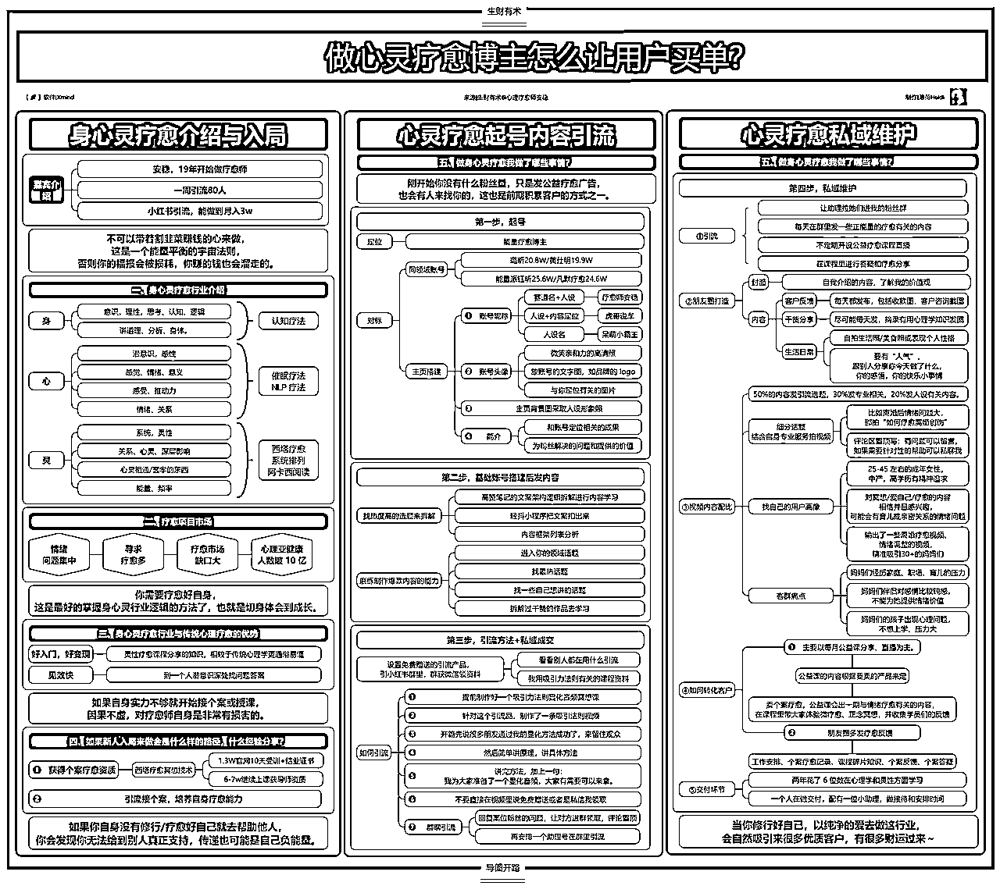
a、理清身心灵的行业疗法，对标账号可参照，起号搭建引流非常详细，尤其私域维护。
b、疗愈项目市场大，但是需要先疗愈好自身，才能传递更好的能量，否则消耗自己。
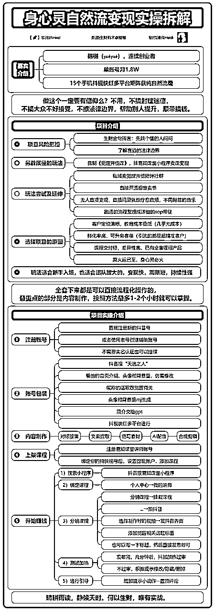
a、这是一个听话照做适合小白直接上手的项目，可像素级模仿。
非常喜欢樾樾的一句话，晴耕雨读，静候天时。重点是前段的短视频制作。
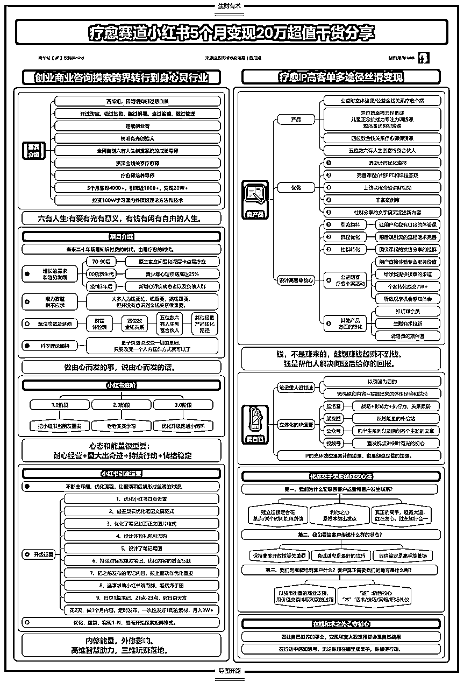
a、这是一个主打高客单的疗愈项目，对于小红书运营升级主要为了引流，私域才是大头。西瓜姐的升级运营小红书给了启发，单纯记录读书笔记的小红书可对标修改。
b、内修能量+外修影响+高维智慧助力，促成项目落地。自身修行是第一步。
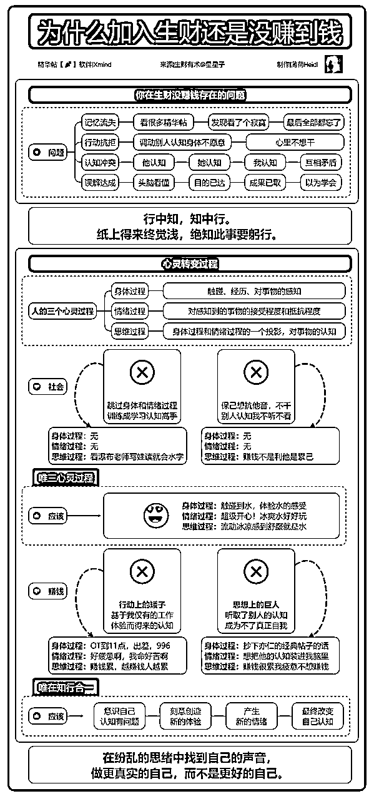
a、做完帖子，我终于知道原来心灵过程有三个阶段，少了其中一个，最终结果是不好的。文章中关于水的例子，让我想起育儿的难点，前期只是买了字卡，告诉孩子读字，直接跳过身体和情绪过程，直达思维过程，孩子根本没兴趣学。而后来我通过让它感受文字的力量，让他说出他的感受，这样学起来更快。
b、而回归到我自己本身，对于赚钱的，一方面是身体过程感受少，认知少，所以才会局限在某个层面，情绪内耗，一方面是情绪过程只想没干，才会进度慢。所以现在的我不管结果如何，我都要先动起来，一边刷帖子做帖子，把大佬的认知刷进脑袋，重构我的认知，一边真正的守破离实操起来。
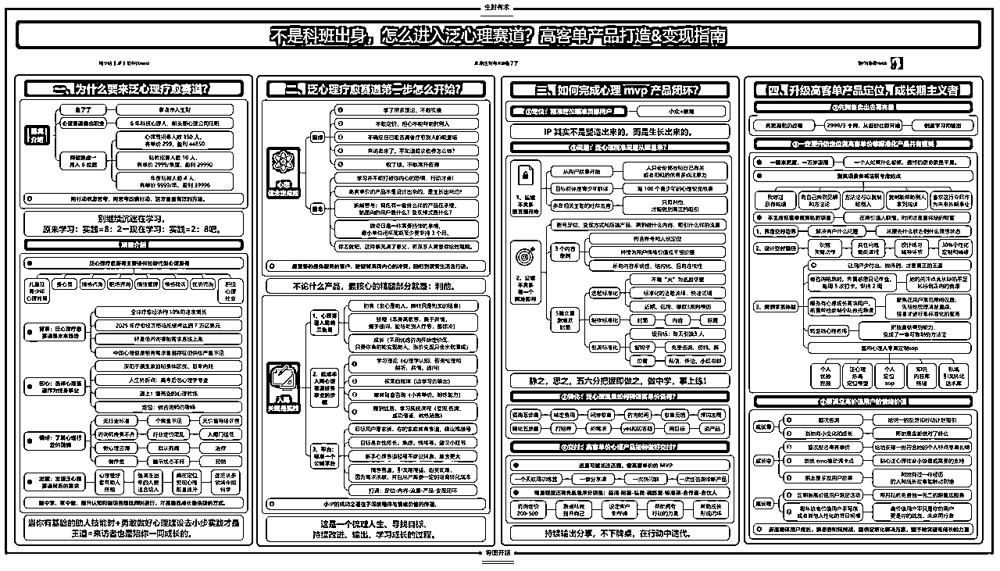
a、这是一个特别的赛道，做咨询师的导师，也是一个咨询师入门的好路子。鱼了了提到的一个入局的点，非常可以借鉴，咖啡随喜咨询，在不好意思收钱的阶段，小客单切入，可以增加可信度，也是跟客户共同进步的一个过程。
b、鱼了了说，静之，思之，五六分把握即做之，做中学，事上练。以前我还会想要是流量来了，我接不住怎么办？现在不会有这想法，而是有了一点把握就开干。先把背包扔过墙，后面的事就自然而然发生了。
c、私域维护是一个深度陪伴和情绪价值的传递过程。所以在客户成长前中后的引导陪伴很重要，而各阶段的挑战都能帮客户洞悉并提供解决方案，赋予她突破与成长的力量，一个闭环下来，既长久，又高客单成交，简直是利他又利己。
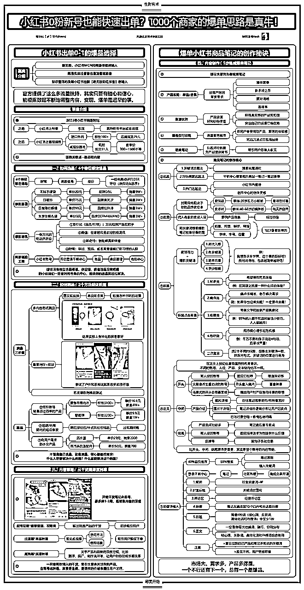
a、偶尔机会听到谢无敌老师的播客，当时想着干货，做成导图肯定更加清晰，结果看到已经做成精华帖，太佩服了。
b、一直听说过低粉爆单，但是实际没深究，没对标过，无敌老师的选品、测品、内容策略是每一个小红书电商人都应该学习。就算不做电商，内容制作也是个学问，互联网时代，内容才是获取流量的密码。
c、我的小红书账号需要立马修改，运营起来。
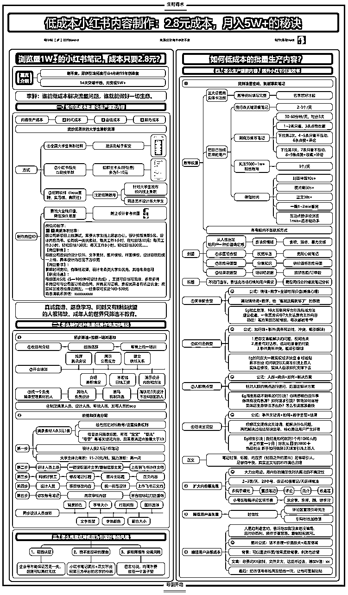
a、当我看到这篇帖子我第一反应是跳过前面的内容直接去第四步，想着只借鉴第四步，结果被刘小排的守破离帖子打脸，普通人第一步【守】是像素级模仿，别人怎么说，你就怎么做，动作一丁点都不要变形。所以要想做好第一步【守】就跟。
①不要偷懒，不要尝试跳过--你还不知道这个环节为什么会存在
②不要取巧，不要尝试修改--你还不能保证你的修改比教程提供的更好。
③不要有偏见，不要low就嗤之以鼻--在成为专家之前，请先克制这样的冲动，偏见的本质是傲慢。
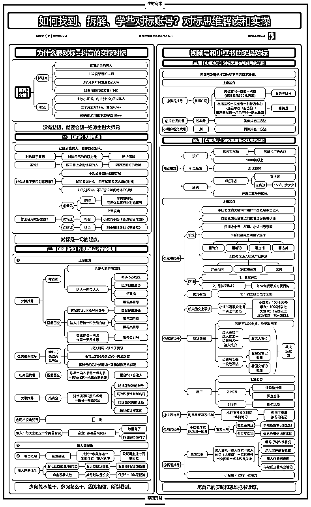
偶尔机会罗卜老师在共创群提到新人营有直播分享，我就申请作图，询问完成时间就开干。
a、举手是被看见的机会，承诺是对自己的目标，这样拖延的可能性就低。
b、抖音、视频号、小红书基本可是小白低成本起号，加上老师们的实操，我们在对标的时候更加容易上手，以前我加入时没有看到新人营，现在新人营对新人特别友好。记得抓紧机会上车，不要应付作业，敷衍作业，是真正去实操下场。
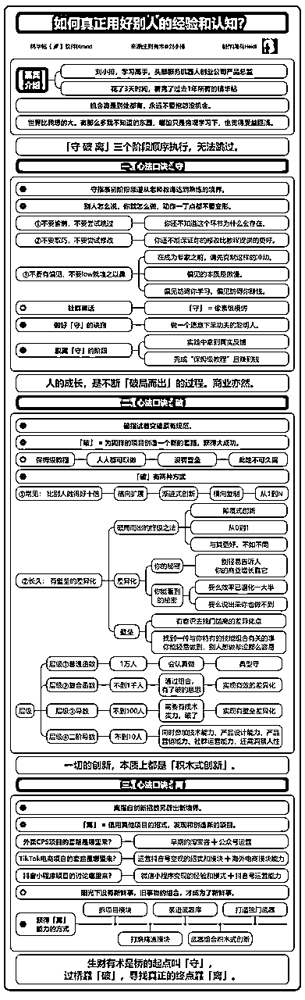
因为晓文老师直播分享，我才看到守破离的原帖子，【守破离】三字虽简单，但是杨涛、郭晓文、刘小排三人分别提到，首先是表达上举例上可能略有差异，但是宗旨不变。
非常认可刘小排老师一句：生财有术是桥的起点叫「守」， 过桥靠「破」，寻找真正的终点靠「离」。
「守 破 离」三个阶段顺序执行，无法跳过。当没有真正的拿到实践的结果，我依然需要继续守。
结合郭晓文老师和梨云老师的对标实操，就从像素模仿开始。
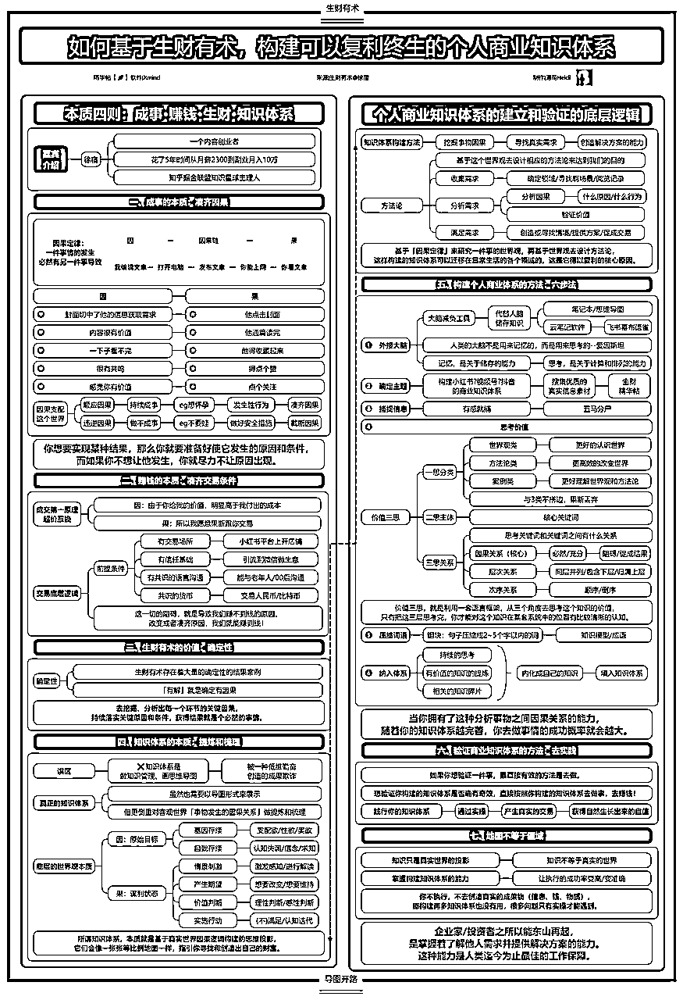
徐宿老师的帖子讲述的是一个底层逻辑，对于个人知识体系，我当初的误区是做个导图，把我所有的想法点子装进去，分个人、成长、职场、教育等多个模块，打造出属于自己的知识体系。实则仅仅是知识，没有从根本上遵循因果关系、满足需求、促成交易等原则。所以一直处于松散状态。后续就有意识按本质原则去构建属于自己的商业知识体系。
以上精华帖子基本是搜索和帖中帖找到的，总结三个共通点：
【守】：像素级对标学习。
【干】：下场干它。
【利】：利他。
1、确定自己的方向，对标学习严格按照【守破离】执行，先下场弄脏手，干他。
2、先赚到1块钱开始，小红书粉丝目标破千，引流100个粉丝，公众号日更，粉丝破百，引流100个粉丝，先赚到1块钱开始。
3、利他继续输出精华帖导图。
4、风向标中标率提升10%。
5、早睡早起，读书50本。
1、强烈建议找准自己的方向，把该方向的精华帖读透，方式：可以付费请教帖子本人，可以做成思维导图提炼精华，可以深度下场实操。这样你与别人的差距就从信息差、认知差、行动差三个方向一起拉开，离赚钱应该就不远。
2、降低期待，把目标定在你能够得着的高度，只需要你跳一下，这样你的正反馈就会持续激励，不至于迷茫焦虑。这也是我参加风向标共创、思维导图共创的原因。
3、认清自己，追风口不是坏事，但是对于不匹配资源和能力的你可能是坏事，要选自己兴趣擅长、资源相匹配的，匹配度越高，越容易拿到结果。
4、快速执行，小步试错，小步快跑，不要眼高手低，多动手多总结，在实践中慢慢找到适合自己的最佳路径。
5、多举手多利他，思维导图上手快，花样多，是深度思考后精华提炼的过程，建议新手学完一定要用起来，一场直播，一次线下，一个帖子，一个社群分享，都可以用思维导图链接大佬，多一个学习的机会。
最后感谢遇到搞钱女孩，感谢柏芝、罗卜老师、鱼丸对我的鼓励，没有他们不会有这篇帖子，也不会有崭新的薄荷。谢谢你们！感恩亦仁大大生财这个大平台，让我边学习边进步，谢谢。
最后说一句，何以生财，唯有实战。